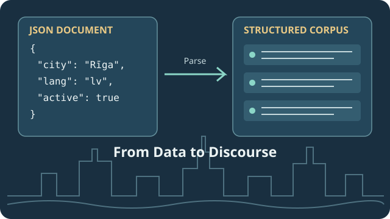

1. Repair JSON
Choose Python syntax or trailing comma; correct it and validate.
Technical week 04 · Version 1 · 25 November 2026
From Data to Discourse — retrieve, interpret and transform structured information into research data.
90-minute core · Digital Humanities · original lecture 11 November 2026

Distinguish JSON text from Python objects; parse and serialize data; navigate nested records; understand HTTP requests and responses; construct a multilingual research corpus with provenance; compare APIs with web scraping.
Revisit Week 3 text processing and continue to Week 5 web scraping. Canonical teaching notes.
Loading local fixtures…
01 · 15 minutes
JSON is text. A Python dictionary is an object in memory. An API is an interface. JSON (JavaScript Object Notation) is a standardized, language-independent data interchange format. An object, array, string, number, boolean or null can be the top-level JSON value. A Python literal is source code that creates a Python object; similar spelling does not mean identical syntax or type.
{
"city": "Rīga",
"active": true,
"score": null,
"tags": ["history"]
}{
"city": "Rīga",
"active": True,
"score": None,
"tags": ["history"]
}Both represent the same information: a city, a boolean status, an unknown score and a collection of tags. JSON is stored in files, transmitted as bytes, or held as a string; parsing constructs the usable in-memory values.
| JSON type | Python type | Example |
|---|---|---|
| Object | dict | {"city":"Rīga"} |
| Array | list | [1, 2] |
| String | str | "Rīga" |
| Number (integer syntax) | int | 42 |
| Number (decimal/exponent) | float | 3.14, 1e3 |
| Boolean | bool | true → True |
| Null | NoneType | null → None |
| Python type | JSON type | Caveat |
|---|---|---|
| dict | object | Object keys become strings; unsupported keys raise an error. |
| list, tuple | array | Tuple identity is lost. |
| str | string | Unicode supported. |
| int, float | number | Non-finite floats are not standard JSON; use allow_nan=False. |
| bool | boolean | true / false |
| NoneType | null | None |
| set, datetime | Not directly supported | Choose explicit representation. |
JSON has one number type; Python chooses int or float based on number syntax. A string containing “42” is not a number. A missing key differs from a key with null. Never use eval() to parse JSON.
Choose an example, edit the JSON, then validate. Formatting uses the browser's parser and may normalize numbers, duplicate object keys and spacing; it is not a lossless archival operation.
JSON requires double-quoted strings and keys, no trailing commas, no comments, and lowercase true, false, null. JavaScript uses one Number type; nested numeric types are therefore shown as possible Python types rather than falsely claiming exact Python results.
Expand containers, select a node and inspect its Python access expression. The path starts at data, the parsed object. Lists use zero-based indices; dictionaries use keys.
—Expected Python type
—Value (JSON notation)
—
import json
json_text = '{"city":"Rīga","active":true}'
data = json.loads(json_text)
print(type(json_text), type(data))
print(data["city"])Try data["results"][0]["metadata"]["language"] on a matching nested object; inspect keys first. In the supplied fixture, language is at data["results"][0]["language"]. Use obj.get("author") for an optional key, but use "author" in obj to distinguish absence from explicit None.
02 · 15 minutes
Parsing analyzes text according to a syntax. Deserialization constructs in-memory values from a serialized representation. Serialization turns objects into a representation suitable for exchange or storage.
| Function | Direction | Result |
|---|---|---|
| json.loads(text) | JSON → Python | Python value from str or supported bytes |
| json.load(stream) | JSON → Python | Python value from readable stream |
| json.dumps(obj) | Python → JSON | Returns str |
| json.dump(obj, stream) | Python → JSON | Writes to stream; returns None |
The final s is a useful mnemonic for string. str(my_dict) is Python's representation, not reliable JSON serialization.
import json
data = {"city": "Rīga", "active": True}
json_text = json.dumps(data, ensure_ascii=False, allow_nan=False)
restored = json.loads(json_text)
print(type(data), type(json_text), type(restored))
with open("record.json", "w", encoding="utf-8") as f:
json.dump(data, f, ensure_ascii=False, indent=2, allow_nan=False)
with open("record.json", encoding="utf-8") as f:
restored = json.load(f)
print(restored)Illustrative Python outputs, not live Python execution.
Escaped characters such as \u012b still decode to ī. UTF-8 is a byte encoding, not the same thing as JSON escaping. JavaScript formatting is illustrative; Python's default separators differ.
03 · 15 minutes
An API defines how applications interact. HTTP is a web communication protocol; not every API uses HTTP, and not every HTTP API returns JSON. A client sends a request to a server endpoint; the response contains a status, headers and a body.
| Term | Meaning |
|---|---|
| Endpoint | Address exposing a resource or operation |
| GET | HTTP method commonly used to retrieve information |
| Query parameters | Additional inputs in the URL query string |
| Headers | Metadata about the request or response |
| Response body | Content returned by the server |
| Status code | HTTP-level result, not data validation |
Build a simulated GET URL and choose what the server returns. Parameters are illustrative and do not filter live data; example.invalid is intentionally non-resolving.
| Expression | Python result |
|---|---|
| requests.get(url) | Response object |
| response.content | bytes |
| response.text | str |
| response.json() | Parsed Python object (not JSON text) |
| response.status_code | int |
| response.headers | Dictionary-like headers |
import requests
url = "https://jsonplaceholder.typicode.com/users"
try:
response = requests.get(url, timeout=10)
response.raise_for_status()
data = response.json()
if not isinstance(data, list):
raise ValueError("Expected a list")
if not data or not isinstance(data[0], dict) or not isinstance(data[0].get("name"), str):
raise ValueError("Expected a user name")
print(type(response.content), type(response.text), type(data))
print(data[0]["name"])
except (requests.RequestException, ValueError) as exc:
print("Retrieval or validation failed:", exc)JSONPlaceholder is synthetic practice data. For real research, consult documentation, usage policies and rate limits; use a timeout and preserve provenance. Never expose API tokens in a public repository.
04 · 20 minutes
The canonical notebook retrieves four selected MediaWiki summaries: Digital humanities, Discourse analysis (English), Rīga and Latviešu valoda (Latvian). These are encyclopedic summaries, not social-media discourse or representative samples. The browser uses invented records about the same topics and one deliberately incomplete record; none are Wikipedia quotations.
Choose records and project the fields you need. Required source fields (id, language, title and nonempty text) are validated before projection; the incomplete record is skipped. Removing language or text prevents frequency analysis.
Waiting for fixture.
JSON preserves full provenance and nested metadata. TSV flattens selected fields and adds source kind, generation time and limitations. The fixture has no real retrieval timestamp.
| Field | Purpose |
|---|---|
| Source URL / fixture name | Identify source |
| Language | Group records |
| Retrieval time | When data were acquired; not publication date |
| Record ID | Identification and deduplication |
| Selection | Explain sampling decisions |
| Extraction method | Reproduce transformations |
| Source kind | Distinguish live from synthetic |
| Limitations | Constrain interpretations |
Local files: records · simulated API payload · provenance. Use the notebook for real MediaWiki retrieval; its explicitly labeled synthetic fallback is not empirical evidence.
05 · 15 minutes
Reuse Week 3: extract text, normalize Unicode, tokenize and count surface word forms. The browser uses lowercasing and Unicode letter sequences with internal apostrophes or hyphens; Python's notebook uses casefold and its own regular expression. Results may differ on some Unicode inputs.
Top 12 displayed; export contains all counted forms. Counts update with the selected corpus.
from collections import Counter
import re
import unicodedata
text = "Rīga ir Latvijas galvaspilsēta. Rīga ir kultūras centrs."
tokens = re.findall(r"[^\W\d_]+", unicodedata.normalize("NFC", text).casefold())
print(Counter(tokens).most_common(8))Word forms are not lemmas: valoda, valodas and valodā can be counted separately. Corpus size, genre, selection, morphology and stopword choices affect counts. Do not infer dominant themes across languages from this tiny sample.
06 · 10 minutes
Predict first, then use the labs to test your reasoning. Continue in Colab if time permits.
Choose Python syntax or trailing comma; correct it and validate.
Test an array, null and exponent number. Predict Python types.
Load the API fixture, locate the first title and inspect an absent versus null author.
Set language and limit; compare 200 HTML, invalid structure and 429.
Select records, retain language and text, export JSON and TSV, and explain the skipped record.
Stored only in this browser; not an assessment record.
0 / 6 items marked
CSV is primarily tabular; JSON supports nested values; XML uses elements and attributes. JSON Lines stores one JSON value per line and is useful for incremental processing. Choose a representation according to research needs.
REST is an architectural style, not a synonym for JSON. Many APIs paginate results using cursors or page numbers. Follow documentation, respect rate limits, and keep credentials outside published code.
A JSON Schema can specify expected data types and fields. Browser Network tools can inspect requests and response bodies. Cross-origin resource sharing (CORS) is a browser-enforced policy: a Python request may succeed even when browser JavaScript cannot read a response. It does not grant permission to collect data.
| Characteristic | JSON API | HTML scraping |
|---|---|---|
| Typical input | JSON | HTML |
| Navigation | Keys and indices | Elements and selectors |
| Python parser | response.json() | BeautifulSoup |
| Stability | Potentially documented/versioned | Sensitive to redesign |
Investigate documented, permitted APIs first when available. In Week 5, the same acquisition, parsing and validation pipeline applies to HTML.